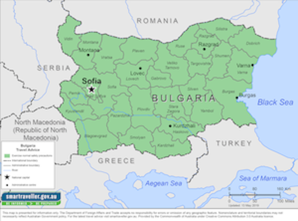

Bulgaria
European country


Bulgaria officially the Republic of Bulgaria (Bulgarian: Република България, tr. Republika Bǎlgariya) is a country in Southeast Europe.
It is bordered by Romania to the north, Serbia and North Macedonia to the west, Greece and Turkey to the south, and the Black Sea to the east.
The capital and largest city is Sofia; other major cities are Plovdiv, Varna and Burgas. With a territory of 110,994 square kilometres (42,855 sq mi), Bulgaria is Europe's 16th-largest country.
Bulgaria is a Balkan nation with diverse terrain encompassing Black Sea coastline, a mountainous interior and rivers, including the Danube. A cultural melting pot with Greek, Slavic, Ottoman,
and Persian influences, it has a rich heritage of traditional dance, music, costumes, and crafts.
At the foot of domed Vitosha mountain is its capital city, Sofia, dating to the 5th century B.C.
Brief History
Emerging from centuries of Ottoman rule, Bulgaria gained its independence in the late 19th century,
joined the losing side of several conflagrations in the first half of the 20th century, and, despite gravitating toward
the Axis powers in World War II, found itself within close orbit of the Soviet Union by mid-century. This alliance had profound effects on
the Bulgarian state and psyche, altering everything from land use and labour practices to religion and the arts. As communist governments fell in eastern
Europe in the late 1980s and early 1990s, Bulgaria was suddenly released from the magnetic field of the Soviet giant and drifted into the uneasy terrain of postcommunism.
European Union
Bulgaria is a member of the European Union, NATO, and the Council of Europe; it is a founding state of the Organization for Security and Co-operation in Europe (OSCE) and has
taken a seat on the UN Security Council three times. Its market economy is part of the European Single Market and mostly relies on services, followed by industry—especially machine
building and mining—and agriculture. Widespread corruption is a major socioeconomic issue; it ranked as the most corrupt country in the European Union for 2018.
Language
The Bulgarian language belongs to the South Slavic group, along with Serbo-Croatian and Slovene; closely related to Bulgarian is Macedonian. A number of dialects remain in common speech.
Bulgarian is written in the Cyrillic alphabet.
Climate


Most of Bulgaria has a moderate continental climate, which is tempered by Mediterranean influences in the south. The average annual temperature is 51 °F (10.5 °C), but this conceals a wide
variation; temperatures as low as −37 °F (−38 °C) and as high as 113 °F (45 °C) have been recorded. Mean annual precipitation ranges from about 18 inches (450 mm) in the northeast to more than
47 inches (1,190 mm) in the highest mountains. The lowlands receive snowfall from mid-October to mid-May, with an annual average of 25–30 days of snow cover. Hailstorms occur between May and August.
Tourism

Tourism in Bulgaria has grown markedly since the 1960s. Roughly 750,000 annual foreign arrivals were arriving in Bulgaria in 2005. In addition to the popular Black Sea resorts, tourists visit
historical centres such as Sofia, Plovdiv, and Rila Monastery and winter sports centres such as Borovets in the Rhodope Mountains. Pirin National Park, which occupies 67,700 acres (27,400 hectares)
in the Pirin Mountains, was designated a UNESCO World Heritage site in 1983; the World Heritage site was expanded in 2010 to cover an additional 25,000 acres (10,000 hectares).